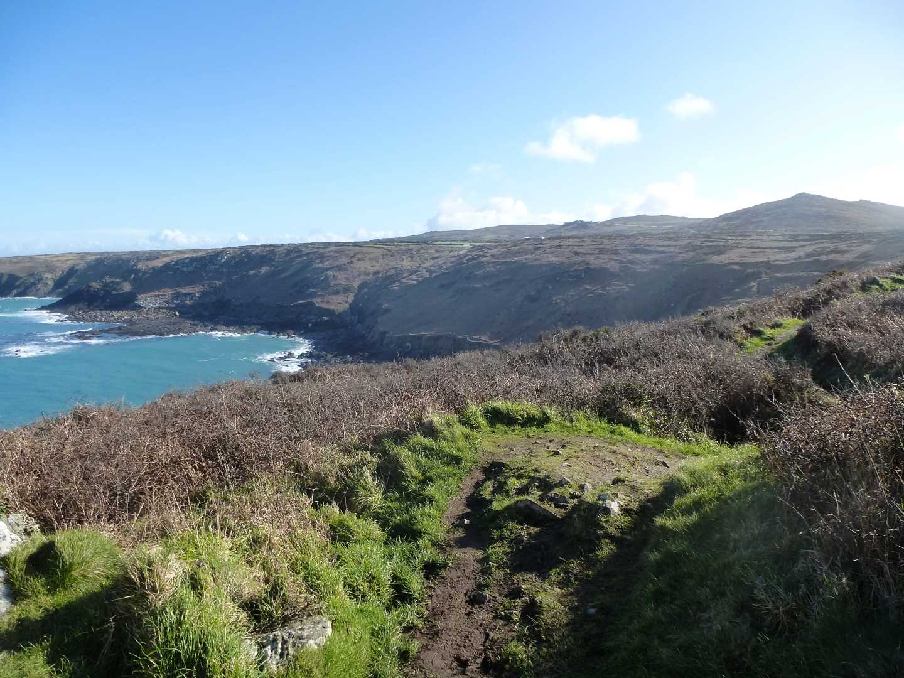
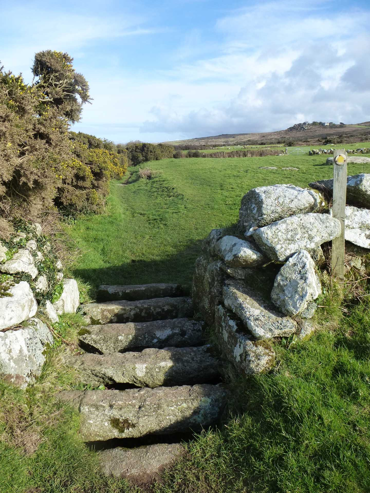

Start Ref: 454 386
End Ref: 454 386
Distance: 7 miles
Time: 3hrs
We start our walk in the quite large car park at Zennor itself, and once we have pulled ourselves away from the Church and its famous bench end, or been tempted by the Giant`s Rock, or the very hospitable Tinners Arms, we are going to follow the road up between the Church and the Pub, as it turns into a white lane off to the left (there is a signpost on our right pointing the way to the Coastal Path or the Field Path. We are going to walk out on one (Coastal), and return on the other(Field).
We follow the lane down as it turns into a path by the final house on our left and head down to Zennor Head, where we can just make out Pendeen Lighthouse far off – 7 miles - to our left. We follow the path around to our right (NE) towards Tremedda Cliff, using the new slightly higher path due to erosion, and on past Gala Rocks, just a short way offshore.
On we walk as we pass over the lovely Wicca Cliff, and around Mussel Point. Now we can see the impressive Carracks, a rocky outcrop just off from Economy Cove.
Here, we find we have to negate a rather wide rock garden, which has no distinct path to pass through. This is a case of picking our footing carefully, as we are a long way from help if we turn an ankle! Up one final hill and as we crest, we can see Carn Naun Point ahead of us. This is a daunting aspect as we see the valley we would have to walk down and up to get to it.
Relief ! We are not going to do this today, as here we find a footpath off to our right, signposted as River Cove Footpath, and we are going to take this as it leads gently up the valley following the river. Up we go until suddenly appearing to be in the garden of Trevail Mill. We are not, do not fear, as we find when the little path brings us out by their gate. Following the now white lane up and around, we pass by Treveal Farm and bear left here, before continuing on to Boscubben Farm.
At Boscubben Farm, we are going to turn right and pick up the Field Path, which is very well marked with signposts and lovely cattle grid style stiles which are made of granite sets. There is one adjustment to the footpath, as between the farmhouses at Boscubben there has been some flood damage, and the owners have put up a sign requesting a diversion up and around the higher building. Please respect this.
Over the boulder strewn fields we pass, as the path leads us pass unmarked Cornish Cross Head, which has been re-secured. Carry on past a couple of derelict buildings, which will leave us thinking about conversion until we notice the mine adit on our left. Then, just as we feel that there can surely be no more fields left in this area of Cornwall (I lost count somewhere around 15!), the steeple of Zennor Church comes into view, as does the Giant`s Rock on our right, and then we drop down into the village, coming out by the signpost showing us the way to the Coastal Path.
I have to admit, to popping into the Tinner`s Arms at this point, as a small refreshing drink was very much needed.
I find this whole section of Cornwall to give most spectacular views and a wide range of colours to bombard the senses and I hope that you enjoy this area as much as I do.